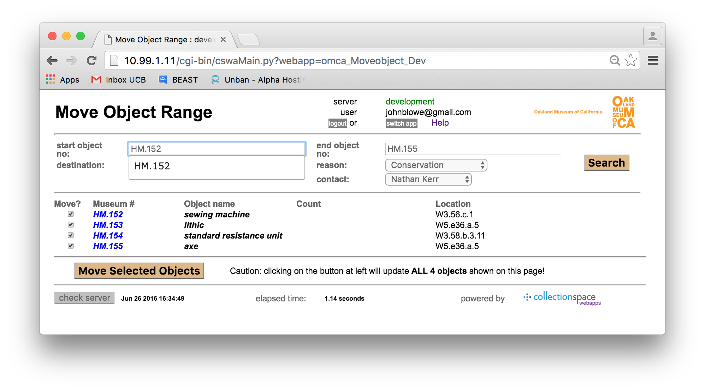

Introduction
|
The webapps are a suite of browser-based tools which access the CollectionSpace database to provide critical functionality not provided by the "regular" interface. In general, the webapps operate on sets of records, a set being defined as something like "all objects in a range of Museum numbers", e.g., "2010.54.1" to "2010.54.10", or "all objects in a location or sequence of locations" (e.g. "W3.10.b.2.13" to "W3.10.b.2.14"), or "all the images in this folder on my computer". Typical operations performed are updating the data for sets of records, or creating move or inventory actions for them. The overall UX ("user experience") is intended to be straightforward -- the forms contain only a few input fields, no more than a couple of buttons, and involve (usually) a short two- or thre- step interaction: 1) fill in search values, click Search, 2) verify response, fill in data for individual items, and 3) click Update and wait patiently for results. (NB: the CollectionSpace backend (i.e. database system) is very slow, and this is the limiting factor for the speed of the webapps.) Besides move and data update operations, a few other webapps provide a means to view database content (e.g., authority hierarchies) in useful ways. There are three classes of webapps in use at OMCA:
|
|
||||
|
|
|
Don't forget to read up on the gotchas! to be found in these webapps.
Click here for a PDF version of this document.
Getting to the Webapps
Logging in
|
Short Description of Each Webapp
A screenshot of each of these is provided below with a short description of its operation.
1. Producedural Webapps
|
This webapp allows registrars to reconcile the results of a (normally physical) inventory. User enters a range of storage locations and the objects in those locations are displayed; the user can then indicate (using the radio buttons) whether the object is indeed located or not. Other reports or the regular UI can be used to follow up on the objects that were not located. |
 This webapp allows registrars, collections managers, and conservators to record the movement of a specific range of Museum numbers to a new storage location (and a new crate, if so desired). Once the user has entered a range of Museum numbers, a new destination/storage location, a reason, and a handler and clicked "Search", all objects in that range of Museum numbers are displayed, along with their object names, counts, and current locations. The user can choose to exclude any objects in this range from the move by deselecting those objects using the provided checkboxes. Once "Move Selected Objects" is clicked, all non-excluded displayed objects will be recorded as having been moved to the new storage location. |
|
This webapp allows registrars, collections managers, and conservators to record the movement of all objects at a location to a new storage location. The user must specify the current storage location and the desired new storage location. The user can choose to exclude any objects from the planned move (for instance, if objects were removed just prior to the planned move) by selecting the "Don't Move" radio button. Once "Move Objects By Location" is clicked, all displayed objects marked as "Move" will be recorded as having been moved to the new storage location, while remaining in their current box. Objects marked as "Don't" will of course remain unchanged. |
|
This webapp uploads media files (usually images) to CollectionSpace. The user selects a set of files on their local computer (using the "Choose Files" button) and then uploads these to the CSpace server. They are then "ingested" into CSpace via a nightly import job. There is an option to perform the ingestion process online, but since the process is slow -- several seconds at least per image -- the usual practice is to use the nightly batch option. |
{kind=link}
{kind=link}
{kind=link}
2. Data Update Webapps
|
This webapp allows registrars, curators, and subject matter experts to quickly verify, edit, and/or update values in several important fields (the so-called "key information fields"). The objects displayed in the KIR webapp are selected according to their storage location(s). Depending on the application (e.g., NAGPRA, physical inventory, retrospective cataloging), the identity of these key fields can vary, so the webapp accommodates different sets of—and configurations of—data fields. In most cases these are editable, but for some (e.g., Donor), the KIR webapp serves as a way to quickly determine the state of data entry and to identify particular records that need to be updated in the CSpace UI. |
|
As with the KIR webapp, the OIR webapp allows registrars, curators, and subject matter experts to quickly verify, edit, and/or update values in several important fields. The sets of "Key Information" fields are the same as in the KIR webapp. The only difference between KIR and OIR is that in the OIR webapp, a range of Museum numbers is used to select the objects (instead of a range of storage locations). |
|
As with the KIR and OIR webapps, the BOE webapp allows registrars, curators, and subject matter experts to quickly update values in several important fields. The sets of available "Key Information" fields are the same as in the KIR and the OIR webapps. The BOE webapp differs in one very important aspect from either KIR or OIR: the values in the fields to be updated are not displayed by the BOE webapp. The user must know in advance what the existing values of these fields are, and must also be certain that they want to override all values in a particular field with a single value that the user can enter into each field. The user can update several fields at once, or only a single field at a time. |
{kind=link}
{kind=link}
{kind=link}
3. Reporting Webapps
|
This webapp produces both packing lists and decanting lists, and offers PDF and CSV options for both. For packing lists, a range of storage locations is entered, and a list of all objects at those locations is generated, grouped by current storage location. To restrict this list to objects from a certain place or continent, a collection place can be specified. To produce decanting lists that facilitate organizing objects by cultural group, the user need only check the "group by culture" checkbox. |
|
This webapp allows users to see a visual representation of the organization of any of six hierarchical authorities (all but storage location). The desired hierarchy is calculated and displayed as a series of hierarchically nested facets, which are all set to be initially open. Users can click any facet arrow to collapse (or reopen) that facet, and can click on any term in the displayed hierarchy to see the corresponding full CSpace authority term record. |
|
This webapp provides a means to access certain reports installed on the collectionspace server. Specificly, iReports which require the user to provide parameters which cannot be provided in the "regular" UI are available here. |
{kind=link}
{kind=link}
{kind=link}
Systematic Inventory: Step 1, Initial Data Entry
Inputs and Outputs
- Start Location
- End Location
- Reason
- Handler
Remarks
- Fill in all 4 values
- Click Search
Systematic Inventory: Step 2, Inventory Input form
Inputs and Outputs
- If an object is not located, click the Not Located radio button for that item
- Make notes for each one if you like -- these are saved in the Movement Record in CSpace.
Remarks
- Click Update Locations to commit your inventory work to the database
Systematic Inventory: Step 3, Result Page
Remarks
- NB: the objects are not updated in order, alas.
- You can save or print this page for your records.
Move Object Range: Step 1, Initial Data Entry
Inputs and Outputs
- Starting object number
- Ending Object Number
- Destination Locations
- Reason
- Crate
- Handler
Remarks
- A very powerful tool, use with caution!
Move Object Range: Step 2, Verification Page
Remarks
- Shows the objects that will be moved.
- You can use the check boxes under "Move?" to prevent individual items from being moved.
Move Object Range: Step 3, Response Page
Remarks
- Shows the result of each move.
Power Move: Steps 1 & 2, Initial Data Entry and Verfication
Inputs and Outputs
- From Location
- To Location
- From Crate
- To Crate
- Reason
- Handler
- Reason
- Handler
Remarks
- Shows the objects that will be moved.
- You can use the check boxes under "Move?" to prevent individual items from being moved.
- A very powerful tool, use with caution!
Power Move: Step 2, Response Page
Remarks
- Shows the result of each move.
Bulk Media Upload
Inputs and Outputs
- A set of files, selected via the Browse button
- "Overide" values, if needed
Remarks
- To see what is in the queue, click the "Show Jobs" button.
Key Information Review: Step 1, Initial Data Entry
Inputs and Outputs
- Start Location
- End Location
- Field Set
Remarks
- Make sure you enter valid locations!
- Pick one of the fieldsets in the dropdown
- I.e. use the term-matching feature to identify the desired location
- Then click Search
Key Information Review: Step 2, Verify Locations
Remarks
- The locations in the range you entered is shown
- You should not try to do more than a few hundred locations at a time
- A few dozen is probably the practical limit
- When you are satisfied with the range, click Enumerate Objects
Key Information Review: Step 3, Data Entry Form
Remarks
- Depending on which fieldset you selected, you will see a set of input fields
- You may alter the contents of each field as needed
- Many (most) of the fields are "authority controlled" -- you should pick an appropriate value from a vocabulary using the term matching feature.
Key Information Review: Step 4, Response Page
Remarks
- At the moment, the museum numbers are not shown. If a problem is noted, you'll need to note the CSID and work back from there.
Object Information Review: Step 1, Initial Data Entry
Inputs and Outputs
- Starting object number
- Ending Object Number
- Field Set
Remarks
- Just like Key Info Review, except it operates on a range of objects instead of locations
- Do please use the term matching feature to pick a valid object
Object Information Review: Step 2, Data Entry Form
Inputs and Outputs
- Depends on fieldset selected
- See KIR
Remarks
- Click on Update Object Information to commit your changes
Bulk Object Edit: Step 1, Initial Data Entry
Inputs and Outputs
- Starting object number
- Ending Object Number
- Field Set
Remarks
- Like KIR and OIR, except it sets the values the same value for all the records in the range.
Packing List: Step 1, Initial Data Entry
Inputs and Outputs
- Start Location
- End Location
- Collection Place: uses Place hierarchy to filter results to ONLY those within the range specified (e.g. "North America", "Asia")
- Group by Culure: if this is checked, the report will return the results grouped by Associated Culture instead of Location
Remarks
- Note that the results can be download to a .csv file for use as a spreadsheet
Packing List: Step 2, Response Page
Remarks
- Empty Locations are included in the output
- If there are Crates containing objects in the Locations, these are shown in the header.
Hierarchy Viewer: Result Page
iReports Viewer
Inputs and Outputs
- Pick a report from the list.
- Enter report parameters, if any.
Remarks
- Report is returned as a PDF, which will be displayed or saved on your computer, depending on your browser settings.
Foibles and Caveats
The webapps have a number of foibles you should know about:- Term matching for authority fields, e.g. Field Collection Place or Ethnographic Group may include terms from other vocabularies and non-preferred terms (however, deleted terms no longer show up.) In fact, the selection algorithm is a bit complicated.
- Term matching for museum numbers is on the literal value of the object number, but the range is calculated on the basis of the museum number sort field (which you cannot see, except when viewing the catalog record).
- For locations, however, both matching and ranges are based on the literal value (Locations do not have a sort field, they sort “as themselves”.)
- You do not have to enter an End Location. If you don’t the app will use the Start Location and fill it in for you.
- Most of the webapps have a limit of 500 locations in a range, and 500 objects in a location. The Packing List is the exception: it will try to render the whole museum if you ask it. This value, incidentally, is based solely on the limitations of the “average web browser”.